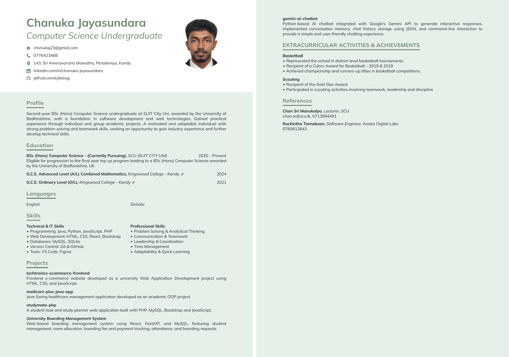

CV Writing
This week focused on learning how to create a professional and effective CV. We discussed the importance of making a good first impression, organising information clearly and including the necessary sections in the correct order. We also learned how to customise a CV according to different job opportunities and how Applicant Tracking Systems (ATS) are used by employers to screen applications.
What a CV includes
| Section | What to write |
|---|---|
| Name and contact | Professional name, phone, email, address, LinkedIn profile, portfolio link |
| Summary / profile | 1 to 2 positive lines about you |
| Work experience | Only if you have it, such as freelancing or an internship |
| Education | Highest qualification to lowest |
| Professional qualifications | Courses that support the job |
| Skills | Soft skills and technical skills |
| Projects | Project name, tools used, a short description and the year |
| Extracurricular activities | National, university and school level |
| Awards | Any recognised achievements |
| Research | Most recent first |
| References | Two unrelated referees |
My CV

What I learned
Through this session, I learned that a CV is not just a document listing our qualifications and experiences, but a way to create a strong first impression on employers. A professional CV should have a clean layout, accurate information and relevant details that match the job requirements. I also understood that using the same CV for every job application is not always effective, as each position may require different skills and qualifications.
Another important thing I learned was how Applicant Tracking Systems (ATS) help employers screen CVs. Using relevant keywords from job advertisements and keeping the layout simple can improve the chances of passing the initial screening. Moving forward, I want to create a well-organised, error-free CV, customise it for different job opportunities and regularly update it with my latest skills, achievements and projects.